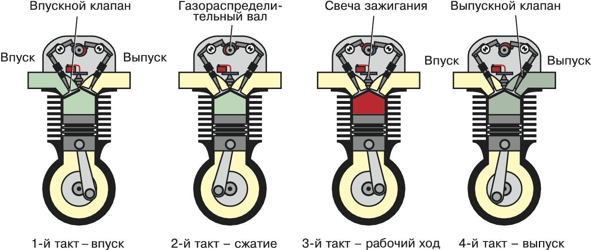

По́ршень — основная деталь насосов, компрессоров и поршневых двигателей внутреннего сгорания, служащая для преобразования энергии сжатого газа в энергию поступательного движения (в компрессорах — наоборот). Для дальнейшего преобразования энергии в крутящий момент служат остальные детали КШМ — шатуны и коленчатый вал. Первый поршневой ДВС создан французским инженером Ленуаром в 1861 году, до этого поршни применялись в паровых машинах и насосах.
Поршень тронкового двигателя или компрессора имеет три части, выполняющие свои функции:
днище (воспринимает газовые силы и тепловую нагрузку);
уплотняющая часть (препятствует прорыву газов, передаёт большую часть тепла от поршня цилиндру);
направляющая часть (тронк) — передаёт боковую силу на стенку цилиндра, поддерживает положение поршня.
Головкой поршня называют днище заодно с уплотняющей частью. Для передачи усилия от поршня может использоваться шток в крейцкопфных двигателях, либо шатун, соединяемый с поршнем посредством поршневого пальца. Другие варианты соединения (СПГГ, шайбовые) используют редко. Кроме тронка или крейцкопфа, боковые усилия может воспринимать и шток.
В крейцкопфных двигателях могут применяться двусторонние поршни. Такой поршень имеет два днища, и тепловой режим его более напряжённый. Но в случае использования подпоршневого пространства как продувочного насоса тепловая напряжённость не возрастает. Теплонапряжённость растёт в 2-тактных двигателях, особенно при использовании поршня как золотника выпуска.
Поршневой палец, при его наличии (тронковые поршни), всегда стальной, ограничен в перемещении в бобышках стопорными кольцами или пластиковыми упорами (Mercedes), либо его положение определено запрессовкой в шатуне (ранние модели ВАЗ). Чаще всего применяют пустотелый плавающий палец со стопорными кольцами, наружный диаметр которого цементован или хромирован